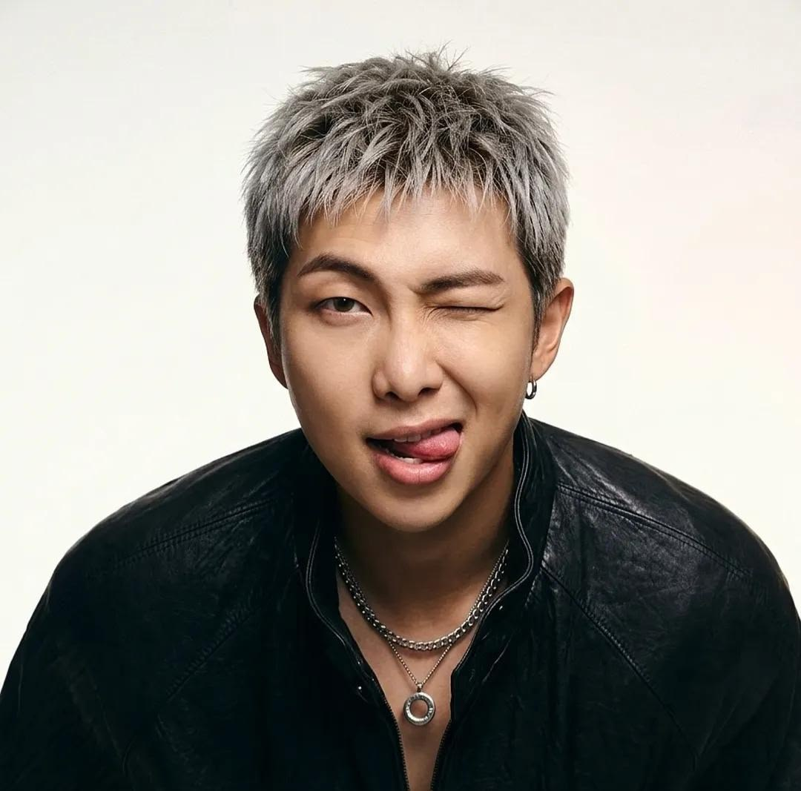

”Conte-me a sua história. Quero ouvir a sua voz e quero ouvir a sua convicção. Não importa quem você
seja, de onde você venha, a cor da sua pele ou a sua identidade de gênero: fale por si mesmo. ”
–RM, 24/09/2018, discurso nas Nações Unidas.
Kim Nam-joon (김남준), mais conhecido pelo seu nome artístico RM (알엠; abreviação de Real Me [ 9 ] , anteriormente
conhecido como Rap Monster (랩몬스터) e Runch Randa (런치란다)), é um rapper, compositor e produtor musical sul-coreano
da Big Hit Music . Ele é membro do grupo masculino BTS , onde ocupa as posições de líder e rapper .
Como artista solo, ele lançou sua primeira mixtape, RM , em 20 de março de 2015, e sua segunda mixtape, Mono , em 23 de
outubro de 2018. Em seguida, fez sua estreia solo oficial com o álbum de estúdio Indigo, lançado em 2 de dezembro de 2022.
